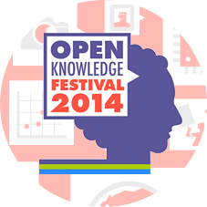

A Hackatona #VaiMudarNaCopa visa estimular o desenvolvimento de aplicativos web ou para celular que apoiem manifestações pacíficas e democráticas no Brasil. A ideia é fomentar o uso criativo e colaborativo da tecnologia com impactos sociais positivos, visando fortalecer nossa democracia e apoiando manifestações pacíficas que deverão ocorrer antes, durante e depois a Copa do Mundo, e que provavelmente mobilizarão centenas de milhares ou milhões de cidadãos insatisfeitos com a situação do país.
Para participar do concurso, você deve increver seu projeto no site vaimudar.hackdash.org e submeter seu projeto entre os dias 15 e 25 de maio, com link para o repositório onde vai estar seu projeto. Você terá até o dia 28 de maio para correções de bugs ou para deixar seu aplicativo rodando em algum servidor e funcional para os fins propostos por você e seu time. Entre os dias 29 e 31 de maio, um comitê avaliará os 3 melhores aplicativos, levando em conta o voto popular.
Publique seu projeto agora!
Os três primeiros colocados ganharão os seguintes prêmios:
1º

Elaboração dos aplicativos para julgamento: desde o lançamento da hackatona até às 23h59 do dia 25 de maio de 2014 as equipes deverão concluir os aplicativos e apresentar o link do repositório em que esteja trabalhando indicando a última versão em caráter plenamente funcional, um site com o aplicativo em funcionamento, bem como a documentação técnica correspondente para a avaliação da comissão julgadora. Você terá mais três dias, até às 23h59 do dia 28 de maio de 2014, para resolver eventuais bugs no seu sistema e deixá-lo rodando em algum local.
Documentação: A documentação técnica apresentada deve incluir todo o código-fonte produzido e, para fins de avaliação do aplicativo, instruções de uso do aplicativo.
Publique seu projeto agora!Teremos uma comissão julgadora composta pelas seguintes entidades Open Knowledge Brasil, Wiba Consultoria, Fundação Avina e Aware.
Avaliação da comissão julgadora: os membros da comissão julgadora deverão se reunir no período de 29 de maio até 1 de junho para avaliarem os aplicativos produzidos e, considerada a votação popular, definirem a classificação das equipes. Para serem elegíveis a receber a premiação, é fundamental que os aplicativos estejam funcionando dia 5 e junho e terá apoio do time técnico da Open Knowledge Brasil.
Quesitos: Os quesitos avaliados pela comissão julgadora serão, pela ordem de importância: grau de utilidade pública dentro do objetivo da hackatona, praticidade de uso, criatividade da solução, qualidade da documentação, mobilidade, custo de manutenção e avaliação popular na plataforma hackdash http://vaimudar.hackdash.org
Regime e Licenciamento: Os aplicativos desenvolvidos para Web ou celular terão regime de licenciamento livre, conforme a definição de conhecimento livre.
Divulgação dos resultados: A classificação final será divulgada na página da Open Knowledge Brasil no dia 4 de junho de 2014.
Em breve